Spring Cloud Alibaba 致力于提供微服务开发的一站式解决方案。此项目包含开发分布式应用服务的必需组件，方便开发者通过 Spring Cloud 编程模型轻松使用这些组件来开发分布式应用服务。
依托 Spring Cloud Alibaba，只需要添加一些注解和少量配置，就可以将 Spring Cloud 应用接入阿里分布式应用解决方案，通过阿里中间件来迅速搭建分布式应用系统。
Spring Cloud Alibaba
简介
Spring Cloud Alibaba致力于提供微服务开发的一站式解决方案。此项目包含开发分布式应用服务的必需组件，方便开发者通过Spring Cloud编程模型轻松使用这些组件来开发分布式应用服务。依托
Spring Cloud Alibaba，只需要添加一些注解和少量配置，就可以将Spring Cloud应用接入阿里分布式应用解决方案，通过阿里中间件来迅速搭建分布式应用系统。目前
Spring Cloud Alibaba提供了如下功能:
- 服务限流降级：支持
WebServlet、WebFlux,OpenFeign、RestTemplate、Dubbo限流降级功能的接入，可以在运行时通过控制台实时修改限流降级规则，还支持查看限流降级Metrics监控。- 服务注册与发现：适配
Spring Cloud服务注册与发现标准，默认集成了Ribbon的支持。- 分布式配置管理：支持分布式系统中的外部化配置，配置更改时自动刷新。
- Rpc服务：扩展
Spring Cloud客户端RestTemplate和OpenFeign，支持调用Dubbo RPC服务- 消息驱动能力：基于
Spring Cloud Stream为微服务应用构建消息驱动能力。- 分布式事务：使用
@GlobalTransactional注解， 高效并且对业务零侵入地解决分布式事务问题。- 阿里云对象存储：阿里云提供的海量、安全、低成本、高可靠的云存储服务。支持在任何应用、任何时间、任何地点存储和访问任意类型的数据。
- 分布式任务调度：提供秒级、精准、高可靠、高可用的定时（基于
Cron表达式）任务调度服务。同时提供分布式的任务执行模型，如网格任务。网格任务支持海量子任务均匀分配到所有Worker（schedulerx-client）上执行。- 阿里云短信服务：覆盖全球的短信服务，友好、高效、智能的互联化通讯能力，帮助企业迅速搭建客户触达通道。
搭配环境
项目中会使用到spring cloud alibaba的相关依赖，因此需要在common项目中导入以进行依赖管理
1 | <dependencyManagement> |
Nacos注册中心
Nacos是一个更易于构建云原生应用的动态服务发现、配置管理和服务管理平台。 在此项目中将作为我们的注册中心和配置中心。
1. 引入Nacos Discovery依赖
对common项目的pom.xml文件进行修改，引入Nacos Discovery Starter依赖
1 | <dependency> |
需要注意的是，高版本的Nacos默认需要添加集群，而我们并未配置集群，因此我们在bin目录下使用如下命令启动Nacos server
1 | cd nacos-server-1.4.3\nacos\bin |
在微服务common中的application.yml配置文件中配置Nacos Server地址和微服务名称
1 | spring: |
之后在每一个微服务的application中添加注解@EnableDiscoveryClient使得服务启动后注册中心能监测到服务上线。
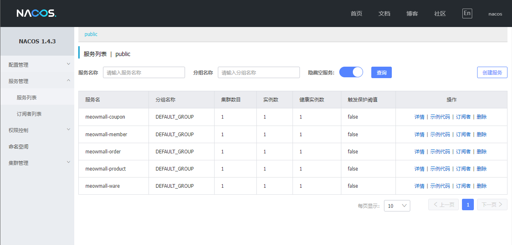
Feign远程调用
现有场景如下：若想要获取通过服务member中的会员模块领取到该会员所有coupon服务中的优惠卷，则需要跨服务调用。
场景中member服务会先去注册中心寻找coupon服务，注册中心Nacos Register调用一台优惠卷服务器，提供给该会员服务，然后允许远程调用。
feign是一个声明式的HTTP客户端，他的目的就是让远程调用更加简单。给远程服务发送的是轻量化的HTTP请求。
会员服务想调用其他服务，首先要添加OpenFeign依赖，通过该依赖，则获取了远程调用其他服务的能力。
1. 在pom.xml文件中导入以下依赖
1 | <dependency> |
2. 在coupon服务中修改以下内容
之后将使用member微服务来掉用该controller
1 |
|
3. 在member的application类上加注解@EnableFeignClients
1 |
|
4. 在member的com.heavytiger.meowmall.member.feign包下新建FeignService接口
1 |
|
5. 在member服务中编写测试请求，尝试获取数据
1 |
|
6. 重新部署member和coupon服务
可以看到，服务部署成功，在访问http://localhost:8000/member/member/coupons能够获取到张三的打折卷信息，远程调用成功！
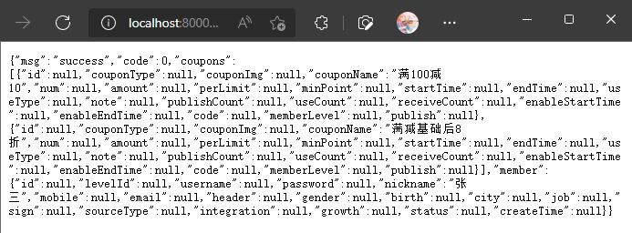
错误解决：
No Feign Client for loadBalancing defined. Did you forget to include spring-cloud-starter-loadbalancer?添加
spring-cloud-starter-loadbalancer后解决在
common服务中修改pom.xml文件
2
3
4
5
6
7
8
9
10
11
12
13
14
15
16
17
<dependency>
<groupId>com.alibaba.cloud</groupId>
<artifactId>spring-cloud-starter-alibaba-nacos-discovery</artifactId>
<exclusions>
<exclusion>
<groupId>org.springframework.cloud</groupId>
<artifactId>spring-cloud-starter-netflix-ribbon</artifactId>
</exclusion>
</exclusions>
</dependency>
<!--引入spring-cloud-starter-loadbalancer-->
<dependency>
<groupId>org.springframework.cloud</groupId>
<artifactId>spring-cloud-starter-loadbalancer</artifactId>
<version>2.2.6.RELEASE</version>
</dependency>
Nacos配置中心
我们在使用SpringBoot时，经常会在properties或者其他文件中配置一个全局值，该服务需要用到该值时可以使用@Value注解获取，但是这样做的坏处是，若在服务器上线环境中需要修改中间的某个值，需要将服务下线，待修改完成才能再部署上线，且若存在集群还需要多次重复修改文件，这样会很繁琐。因此Nacos配置中心解决了这个问题，允许在项目运行中动态地修改配置。
1. 在common项目中引入依赖
1 | <dependency> |
2. 在coupons项目中创建/src/main/resources/bootstrap.properties，这个文件是springboot里规定的，他优先级别比application.properties高
1 | =meowmall-coupon |
3. 在CouponController类中编写如下代码，获取application.properties中的配置数据
1 |
|
4. 浏览器去nacos server里的配置列表，点击＋号，data ID：meowmall-coupon.properties，配置如下内容
1 | ="heavytiger" |
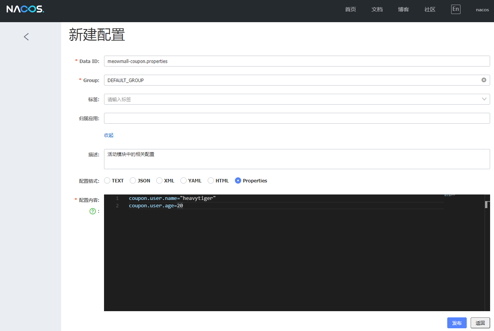
5. 点击发布后。重启coupon，访问http://localhost:7000/coupon/coupon/test
可以看到数据此时已经获取到了
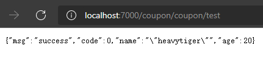
6. 再次修改，再次获取并没有发生动态变化，原因是没有加注解
需要在coupon的controller上加@RefreshScope注解实时刷新作用域
此时可以发现数据在修改后动态变化了，并且nacos配置中心中的内容要优先于本地的配置内容
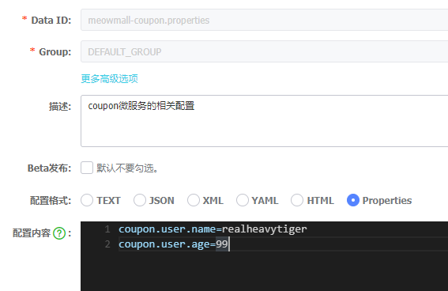
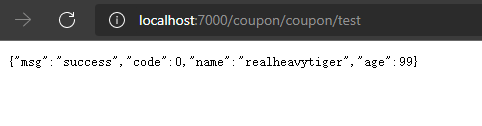
可以看到控制台已经提示键值对被更新，此时获取到的数据发生改变，优先级高于本地配置
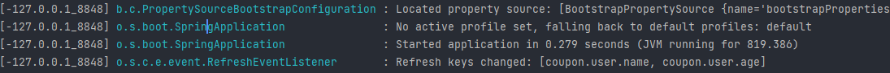
Nacos配置中心进阶
命名空间
命名空间可以用作配置隔离，一般一个微服务，使用一个命名空间，默认是public命名空间，也可以新增命名空间，例如dev(开发配置空间)、test(测试配置空间)、prod(上线配置空间)等。properties在每个空间中都可以使用相同的key配置一份不同的值。同样，也可以为每个微服务配置一个命名空间，使得微服务之间互相隔离。
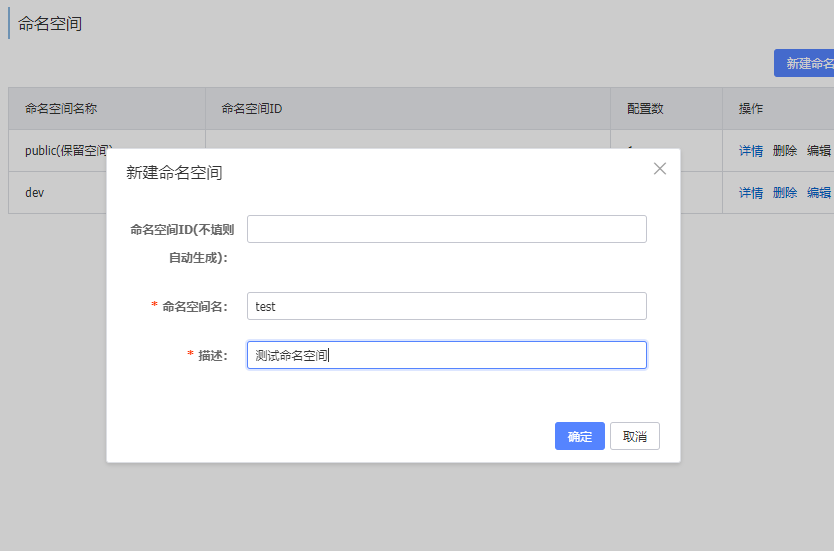
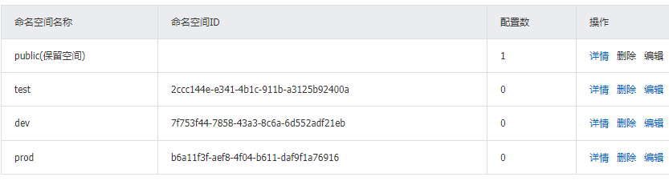
使用克隆配置将public命名空间中的数据导入新的dev命名空间
1 | # 在dev命名空间中将配置修改为如下所示： |
此时开启服务获取到的仍是默认的命名空间，在bootstrap.properties中进行如下配置，将dev命名空间修改为被选择的空间
1 | =meowmall-coupon |
可以看到，此时访问获得的数据已经变成了dev空间下设置的数据。
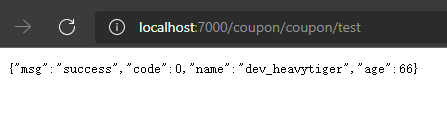
配置分组
默认所有的配置集都属于DEFAULT_GROUP。自己可以创建分组，比如双十一，618，双十二
这样做可以在同一个命名空间下有同名的不属于同一分组的配置集。
例如命名空间dev中的分组11_11配置如图所示
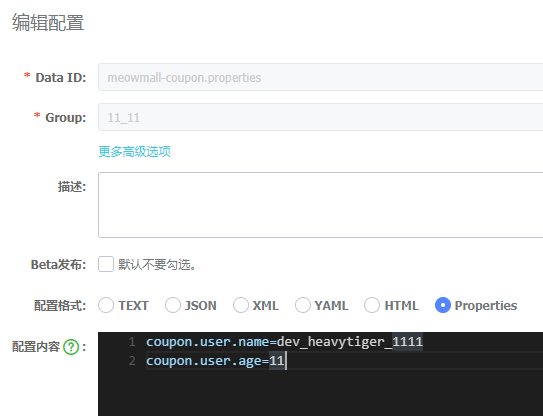
修改bootstrap.properties为如下所示：
1 | =meowmall-coupon |
重新运行，继续访问得到如下结果，可以看到此时为分组11_11中的数据：
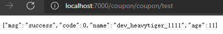
同时加载多个配置集
为了简化配置，不至于太过繁琐，可以同时加载多个配置集
datasource.yml
1 | spring: |
mybatis.yml
1 | mybatis-plus: |
other.yml
1 | spring: |
bootstrap.properties
1 | =meowmall-coupon |
这样在启动时，可以同时加载多个配置集的配置，使得Nacos中的配置文件被简化
Spring Cloud Gateway网关
网关可以动态地管理服务，假设Product服务有100个服务器，不可能强制配置死，比如让前端每次都访问7000端口调用coupon服务，若出现服务下线，还需要进行动态修改，因此需要设置网关进行动态地管理，能从Nacos服务注册中心实时地感知服务上线或下线。
此外网关可以用于路由转发，权限校验，流量控制等功能。SpringCloud gateway就具有这些功能，且性能非常好。
网关有三大核心概念：
- Route: 发一个请求给网关，网关要将请求路由到指定的服务。路由有id，目的地uri，断言的集合，匹配了断言就能到达指定位置
- Predicate: 类似于java中的
assert断言，匹配请求中的任何信息，包括请求头，请求体等- Filter: 过滤器请求和响应都可以被修改。 客户端发请求给服务端，中间存在网关。将请求先交给映射器，如果能匹配处理就直接交给
handler处理，然后交给一系列filter，处理成匹配的格式后就交给指定的服务，最后再返回结果给客户端。
网关架构图如图所示：
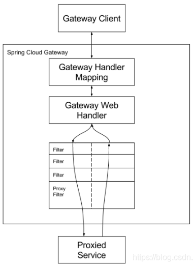
网关的使用：
1. 创建新的项目meowmall-gateway，在pom.xml中导入相关的依赖
1 | <dependency> |
2. 开启注册服务发现功能@EnableDiscoveryClient
1 | // 需要排除数据源自动配置，否则之后会因为没有配置数据源报错 |
3. 配置application.yml
1 | spring: |
在此配置中，出现url匹配到leetcode则跳转到leetcode的官网，匹配到blog则跳转到本人的博客
启动后，发现跳转后地址栏路径不发生变化，因此其他的资源通过该路径均无法被请求到，只有html页面
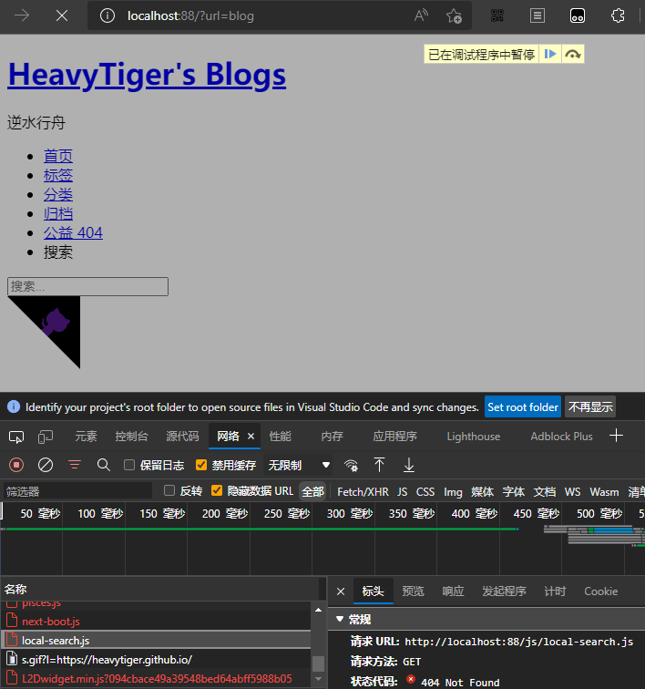
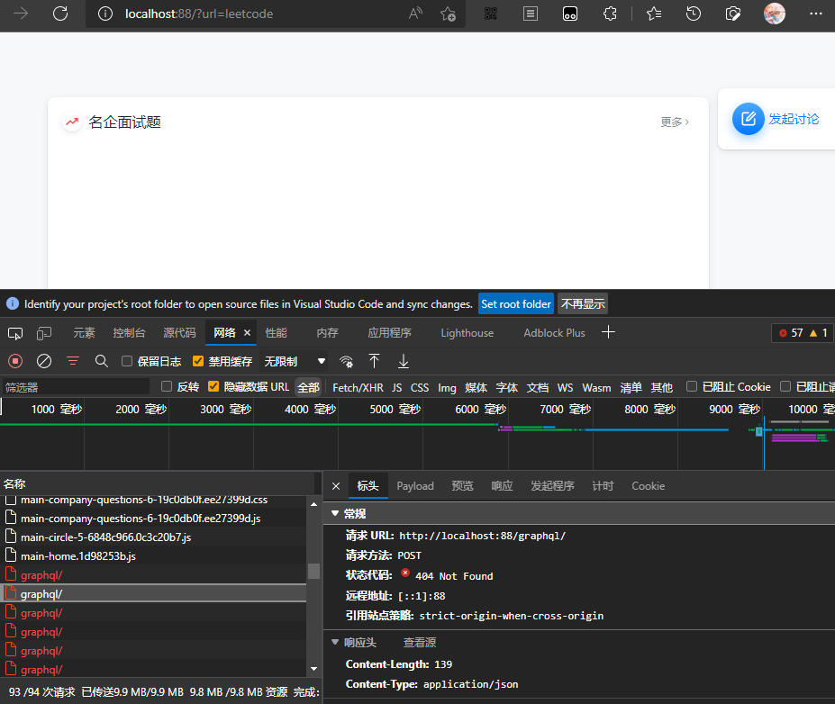